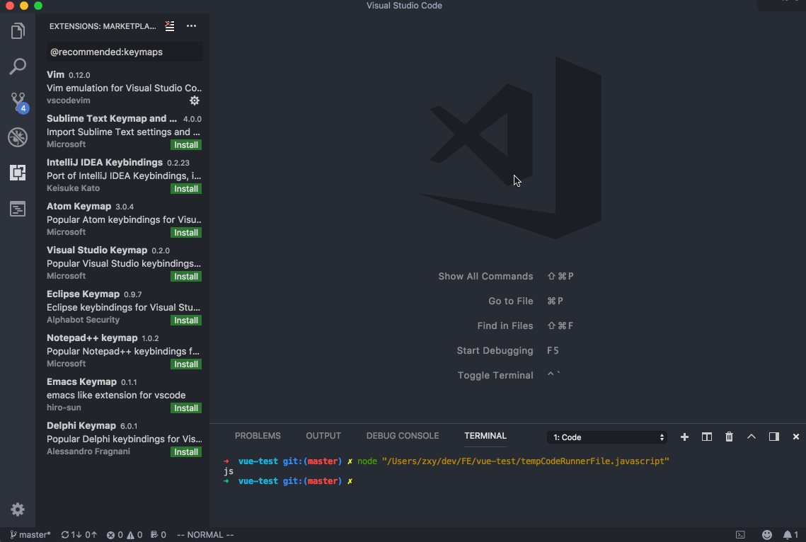

VSCode 介绍
基本设置
- 在 VSCode 中，按下
Command + ,可以编辑配置，配置分为全局配置和项目配置，项目配置的优先级高于全局配置。 - 按下
Command + k + Command + s键可以管理快捷键。 - 按下
Command + p可以在项目中根据名称搜索并打开文件。 - 按下
Command + Shift + p可以打开命令面板，那些不记得快捷键的命令，都可以在这里找到。
掌握这些就可以初步使用 VSCode 了，下面会列举一些我的配置和插件，更多关于 VSCode 的配置介绍，请参考：vscode-tips-and-tricks
通用插件
Beautify：代码格式化插件，可以将 JS、CSS 和 HTML 代码格式化Code Outline：支持多种语言的 outline 提取Code Runner：可以运行多种语言，我配置的快捷键为Command + R。注意新的文本文件因为没有后缀名，要用快捷键Command + K + M手动切换语言类型。Dash：使用快捷键Ctrl + h快速打开 Dash 查找当前单词MarkdownLint：Markdown 语法检查，帮助你写出标准的 MarkdownProject Manager：帮助你管理项目，在多个项目间切换，快捷键Option + P（首先要添加进项目列表）TODO Highlight：高亮显示 TODOVSCode Icons：根据文件和文件夹名称展示恰当的图标Bracket Pair Colorizer：给成对的括号配上颜色，方便区分File Size：在底部 bar 中显示文件大小Path Intellisense：自动补全文件路径

前端插件
Auto Close Tag：自动补全另一侧的 TagAuto Rename Tag：修改一个 Tag 时，另一侧的 Tag 自动修改Color Highlight：遇到颜色字符串，自动在旁边显示颜色，方便预览CSS Peek：ESLint：代码格式化，支持实时监测和保存时自动修改HTML Snippets：HTML 语法片段，方便快速输入IntelliSense for CSS class：CSS 自动补全JavaScript code snippets：JS 的语法片段，方便快速输入Modern JavaScript Snippets：补充了一些更新的语法片段HTML CSS Support：方便在 HTML 中插入 CSS 代码SASS：sass 格式文件的代码补全和高亮Vetur：Vue 开发必备的插件，提供代码补全、高亮等功能Vue 2 Snippets：Vue 2 的代码片段Vue peek：快速跳转定义
语法插件
一般用什么语言就装什么插件就行了。比如 Node、Bash、Python、Go、Ruby 等。
集成终端
VSCode 集成了一个终端，可以直接读取 .zshrc 中的配置（也就是说使用起来和 iTerm 几乎是一模一样的）。相关快捷键有：
cmd + \： 水平切割，生成一个新的终端界面cmd + 数字：当光标停留在终端时，通过数字来选择要聚焦的窗口cmd + w：当光标停留在终端时，关闭当前终端cmd + t：当光标停留在终端时，新建一个终端cmd + l： 在 VSCode 内嵌的终端和代码编辑器中互相切换，再也不用跳出到 iTerm 了- ``ctrl + ```：隐藏/展示 终端